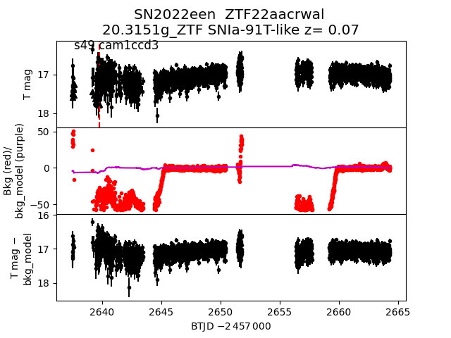
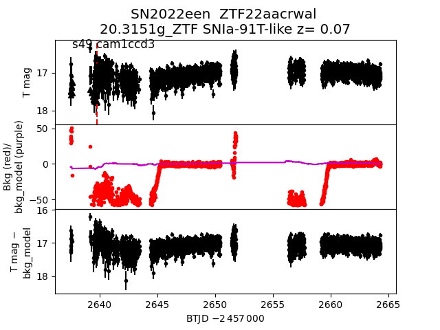

sector49 supernovae (17 total)
Each figure has three panels. The top panel shows the transient light curve, the middle panel shows the local background (estimated in an annulus), and the bottom panel shows a "background-model corrected" light curve. Details about the background model are in the README.
The vertical red line marks the time of discovery reported to TNS. Other useful metadata from TNS is in the figure title.
Note that the top and bottom panel are in magnitudes, while the middle panel is in differential flux units. The magnitudes are calibrated to the flux in the reference image used for image subtraction. Thus, flux from the host galaxy is included in these magnitudes.
3-sigma upper limits are plotted as triangles with no errorbars. A typical limiting magnitude is 19.6 in 30 minutes or 18.4 in 200 seconds (for low backgrounds).
The links allow you to download the light curve data as a text file.
More details in the README.
2022eyu
2022eti
 2022exc
2022exc
 2022eyy
2022een

2022doj
2022eaz
2022emj
2022eyy
2022een

2022doj
2022eaz
2022emj
 2022ery
2022eoa
2022ery
2022eoa
 2022fab
2022fab
 2022emm
2022emm
 2022eat
2022eat
 2022eaw
2022emx
2022eyw
2022dme
2022eaw
2022emx
2022eyw
2022dme